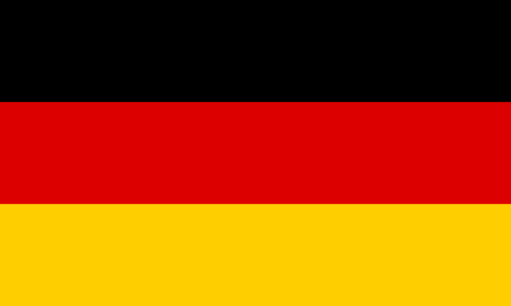

Pályák

Albert Park Street Circuit, Ausztrália, Melbourne
Az Albert Park Street Circuit egy ideiglenes versenypálya Melbourne-ben, Ausztráliában, amely az Albert Park tó körül helyezkedik el. A Formula–1-es Ausztrál Nagydíjnak ad otthont, és 5,278 km hosszú. A pálya gyors és technikás, hosszú egyenesekkel és éles kanyarokkal. Mivel utcai pálya, a tapadás alacsonyabb, és a bukóterek szűkösek, ami kihívást jelent a pilótáknak.
| Hossz | Leggyorsabb versenyben futott kör | Legutóbbi győztes |
5278 méter |
1:19.813 Charles Leclerc(2024) |
Carlos Sainz Jr. |
|---|


A Shanghai International Circuit, Kína, Shanghai
A Shanghai International Circuit egy modern versenypálya Kínában, amely 2004 óta ad otthont a Formula–1-es Kínai Nagydíjnak. A 5,451 km hosszú pályát Hermann Tilke tervezte, és jellegzetes csigavonalú kanyarok, hosszú egyenesek és technikás szakaszok jellemzik. A széles pálya sok előzési lehetőséget kínál, különösen a hosszú hátsó egyenes után következő hajtűkanyarnál.
| Hossz | Leggyorsabb versenyben futott kör | Legutóbbi győztes |
5451 méter |
1:32.238 Michael Schumacher(2004)  |
Max Verstappen |
|---|


Suzuka International Race Course, Japán, Suzuka
A Suzuka International Race Course Japán egyik leghíresebb versenypályája, amely 1962 óta működik. A 5,807 km hosszú pálya egyedi nyolcas alakú kialakításáról ismert, amely egy hidat is magában foglal. Gyors, technikás szakaszai – mint az S-kanyarok, a Degner-kanyarok és a 130R – komoly kihívást jelentenek a pilótáknak. A Suzuka Circuit rendszeresen otthont ad a Formula–1-es Japán Nagydíjnak, és a motorsport egyik legikonikusabb helyszíne.
| Hossz | Leggyorsabb versenyben futott kör | Legutóbbi győztes |
5807 méter |
1:30.983 Sir Lewis Hamilton(2019) |
Max Verstappen |
|---|


Bahrein International Circuit, Bahrein, Sakhir
A Bahrein International Circuit egy modern versenypálya Bahreinben, amely 2004 óta ad otthont a Formula–1-es Bahreini Nagydíjnak. A 5,412 km hosszú pályát Hermann Tilke tervezte, és széles aszfaltcsíkja, hosszú egyenesei, valamint éles féktávjai miatt kiváló előzési lehetőségeket kínál. A sivatagi környezet miatt a homok gyakran kihívást jelent a tapadás szempontjából. Az éjszakai futamok látványos versenyeket eredményeznek a kivilágított pályán.
| Hossz | Leggyorsabb versenyben futott kör | Legutóbbi győztes |
5412 méter |
1:31.447 Pedro de la Rosa(2005) |
Max Verstappen |
|---|

Jeddah Corniche Circuit, Szaud Arábia, Jeddah
A Jeddah Corniche Circuit egy utcai versenypálya Szaúd-Arábiában, amely 2021 óta ad otthont a Formula–1-es Szaúd-arábiai Nagydíjnak. A 6,174 km hosszú pálya a Vörös-tenger partján helyezkedik el, és a világ egyik leggyorsabb utcai pályája. Hosszú egyenesek, gyors, íves kanyarok és szűk szakaszok jellemzik, ami izgalmas és kihívást jelentő versenyeket eredményez. A pálya éjszakai futamairól és látványos városi környezetéről is híres.
| Hossz | Leggyorsabb versenyben futott kör | Legutóbbi győztes |
6174 méter |
1:30.734 Sir Lewis Hamilton (2021) |
Max Verstappen |
|---|

Miami International Autodome, Egyeül Államok, Florida, Miami
A Miami International Autodrome egy ideiglenes versenypálya az Egyesült Államokban, amely 2022 óta ad otthont a Formula–1-es Miami Nagydíjnak. A 5,412 km hosszú pálya a Hard Rock Stadion körül épült, és gyors egyenesekkel, technikás kanyarokkal, valamint egy szűk és trükkös sikánnal rendelkezik. A floridai helyszín látványos környezetet és kihívásokkal teli versenyeket kínál, miközben a pálya kialakítása az utcai és állandó pályák elemeit ötvözi.
| Hossz | Leggyorsabb versenyben futott kör | Legutóbbi győztes |
5451 méter |
1:29.708 Max Verstappen(2023) |
Lando Norris |
|---|

mola Circuit/Autodromo Enzo e Dino Ferrari, Olaszország, Imola
A Shanghai International Circuit egy modern versenypálya Kínában, amely 2004 óta ad otthont a Formula–1-es Kínai Nagydíjnak. A 5,451 km hosszú pályát Hermann Tilke tervezte, és jellegzetes csigavonalú kanyarok, hosszú egyenesek és technikás szakaszok jellemzik. A széles pálya sok előzési lehetőséget kínál, különösen a hosszú hátsó egyenes után következő hajtűkanyarnál.
| Hossz | Leggyorsabb versenyben futott kör | Legutóbbi győztes |
4909 méter |
1:15.484 Sir Lewis Hamilton (2020) |
Max Verstappen |
|---|


Circuit de Monaco, Monaco, Monaco
A Monacói Nagydíj pályája, hivatalos nevén Circuit de Monaco, a világ egyik leghíresebb és legikonikusabb versenypályája. Az 3,337 km hosszú utcai pálya szűk kanyarjaival, szoros falakkal és minimális előzési lehetőségekkel rendkívül technikás és kihívást jelent a pilóták számára. Olyan legendás szakaszok találhatók itt, mint a Fairmont-hajtűkanyar, a Tunnel és a Swimming Pool-sikán. A luxuskörnyezet és az egyedülálló atmoszféra miatt Monaco a Formula–1 egyik leglátványosabb és legkülönlegesebb versenyhelyszíne. A 2025-ös versenyre az FIA(Federation Internationale de l'Automobile) az érdekesebb verseny reményében megnövelte a kötelező boxkiállások számát kettőre.
| Hossz | Leggyorsabb versenyben futott kör | Legutóbbi győztes |
3337 méter |
1:12.909 Sir Lewis Hamilton (2021) |
Charles Leclerc |
|---|


Circuit de Barcelona-Catalunya, Spanyolország, Barcelona
A Circuit de Barcelona-Catalunya egy ikonikus versenypálya Spanyolországban, amely 1991 óta ad otthont a Formula–1-es Spanyol Nagydíjnak. A 4,657 km hosszú pálya kiegyensúlyozott vonalvezetésével, gyors és technikás kanyarjaival, valamint hosszú egyeneseivel a csapatok egyik kedvelt tesztpályája. Olyan híres kanyarok találhatók itt, mint a Campsa és a La Caixa-hajtűkanyar. A változatos szakaszok miatt a pálya ideális a versenyautók teljesítményének értékelésére és izgalmas futamok lebonyolítására.
| Hossz | Leggyorsabb versenyben futott kör | Legutóbbi győztes |
4657 méter |
1:16.330 Max Verstappen(2023) |
Max Verstappen |
|---|

Circuit Gilles Villneuve, Kanada, Montreál
A Circuit Gilles Villeneuve egy híres versenypálya Kanadában, Montréalban, amely 1978 óta ad otthont a Formula–1-es Kanadai Nagydíjnak. A 4,361 km hosszú félig utcai pálya gyors egyenesekkel és éles sikánokkal rendelkezik, ami izgalmas versenyeket eredményez. Olyan ikonikus szakaszok találhatók itt, mint a "Wall of Champions", amely számos legendás pilótát megbüntetett az évek során. A pálya dinamikus vonalvezetése és a változékony időjárási körülmények miatt mindig kiszámíthatatlan és látványos futamokat hoz.
| Hossz | Leggyorsabb versenyben futott kör | Legutóbbi győztes |
4361 méter |
1:13.078 Valtteri Bottas (2019) |
Max Verstappen |
|---|


Red Bull Ring, Ausztria, Spilberg
AA Red Bull Ring egy ikonikus versenypálya Ausztriában, Spielbergben, amely 1969 óta létezik, és jelenlegi formájában 2014 óta ad otthont a Formula–1-es Osztrák Nagydíjnak. A 4,318 km hosszú pálya rövid, de rendkívül gyors, hosszú egyenesekkel és meredek szintkülönbségekkel. Olyan kulcsfontosságú kanyarok jellemzik, mint a Remus-hajtűkanyar és a Rindt-kanyar. A gyönyörű alpesi környezetben fekvő Red Bull Ring izgalmas futamokat és szoros csatákat kínál, különösen az előzésre alkalmas pontjain.
| Hossz | Leggyorsabb versenyben futott kör | Legutóbbi győztes |
4318 méter |
1:02.939 Valtteri Bottas (2020) |
George Russel |
|---|

Silverstone Circuit, Egyesült Királyság, Silverstone
A Silverstone Circuit az Egyesült Királyság egyik leghíresebb versenypályája, és a Formula–1 szülőhelye, mivel itt rendezték az első világbajnoki futamot 1950-ben. A 5,891 km hosszú pálya gyors és technikás vonalvezetéséről ismert, ikonikus kanyarjaival, mint a Maggotts, Becketts és Copse. A nagy sebességű szakaszok és a változékony brit időjárás kihívást jelentenek a pilótáknak, miközben a pálya gazdag motorsporttörténelme miatt különleges helyet foglal el az F1 naptárában.
| Hossz | Leggyorsabb versenyben futott kör | Legutóbbi győztes |
5891 méter |
1:27.097 Max Verstappen(2023) |
Sir Lewis Hamilton |
|---|

Circuit de Spa-Francorchamps, Belgium, Stavelot
A Circuit de Spa-Francorchamps Belgium ikonikus versenypályája, amely 1921 óta ad otthont versenyeknek, és a Formula–1 egyik legkedveltebb helyszíne. A 7,004 km hosszú pálya a leghosszabb az F1 naptárában, és híres gyors, technikás vonalvezetéséről és jelentős szintkülönbségeiről. Olyan legendás kanyarok találhatók itt, mint az Eau Rouge – Raidillon, a Pouhon és a Blanchimont. A változékony időjárás és a nagy sebességű szakaszok miatt Spa mindig látványos és kiszámíthatatlan versenyeket eredményez.
| Hossz | Leggyorsabb versenyben futott kör | Legutóbbi győztes |
7004 méter |
1:44.701 Sergio Perez(2024) |
Sir Lewis Hamilton |
|---|

Hungaroring, Magyarország, Mogyoród
A Hungaroring Magyarország ikonikus versenypályája, amely 1986 óta ad otthont a Formula–1-es Magyar Nagydíjnak. A 4,381 km hosszú technikás pálya szűk és kanyargós vonalvezetésével a pilóták számára komoly kihívást jelent, gyakran hasonlítják egy "száraz Monaco"-hoz. Az előzési lehetőségek korlátozottak, így az időmérő edzés kiemelten fontos. A forró nyári versenyek és a lelkes szurkolótábor miatt a Hungaroring különleges helyet foglal el az F1-es naptárban.
| Hossz | Leggyorsabb versenyben futott kör | Legutóbbi győztes |
4381 méter |
1:16.627 Sir Lewis Hamilton(2020) |
Oscra Piastri |
|---|


Circuit Zandvoort, Hollandia, Zandvoort
A Circuit Zandvoort Hollandia híres versenypályája, amely 1952 óta rendez motorsportversenyeket, és 2021-ben tért vissza a Formula–1-es Holland Nagydíj helyszíneként. A 4,259 km hosszú pálya gyors és technikás, ikonikus döntött kanyarokkal, mint a Hugenholtzbocht és az Arie Luyendykbocht. A szűk vonalvezetés és a homokos tengerparti környezet kihívást jelent a pilótáknak. A narancssárga tömeg és a különleges atmoszféra miatt Zandvoort az egyik leglátványosabb versenyhelyszín az F1 naptárában.
| Hossz | Leggyorsabb versenyben futott kör | Legutóbbi győztes |
4259 méter |
1:11.097 Sir Lewis Hamilton(2021) |
Lando Norris |
|---|

Monza Circuit/Autodromo Nazionale di Monza, Olaszország, Monza
AA Monza Circuit, hivatalos nevén Autodromo Nazionale di Monza, Olaszország legendás versenypályája, amely 1922 óta ad otthont motorsportversenyeknek. A 5,793 km hosszú pálya a Formula–1 leggyorsabb helyszíne, ahol a hosszú egyenesek és ikonikus kanyarok, mint a Curva Grande, Lesmo és Parabolica (Alboreto-kanyar), lehetővé teszik a nagy végsebességeket és izgalmas előzéseket. A pálya híres a szenvedélyes Tifosi szurkolókról és az egyedülálló hangulatról, amely minden évben felejthetetlen versenyeket hoz.
| Hossz | Leggyorsabb versenyben futott kör | Legutóbbi győztes |
5793 méter |
1:21.046 Rubens Barricello(2004) |
Charles Leclerc |
|---|

Baku City Circuit, Azerbajdzsán, Baku
A Baku City Circuit egy utcai versenypálya Azerbajdzsán fővárosában, amely 2016 óta ad otthont a Formula–1-es Azeri Nagydíjnak. A 6,003 km hosszú pálya a világ egyik leghosszabb és leggyorsabb utcai pályája, amely szűk kanyarokat és rendkívül hosszú egyeneseket kombinál. A híres várfal melletti szűk szakasz és a 2,2 km-es célegyenes különleges kihívást jelent a pilótáknak. A városi környezet és a kiszámíthatatlan versenyek miatt Baku az F1 egyik legizgalmasabb helyszíne.
| Hossz | Leggyorsabb versenyben futott kör | Legutóbbi győztes |
6003 méter |
1:43.009 Charles Leclerc(2019) |
Oscar Piastri |
|---|

Marina Bay Street Circuit, Singapore, Singapore
AA Marina Bay Street Circuit egy látványos utcai versenypálya Szingapúrban, amely 2008 óta ad otthont a Formula–1-es Szingapúri Nagydíjnak. A 4,928 km hosszú pálya szűk és technikás vonalvezetése, valamint a magas páratartalom és éjszakai futamok miatt az egyik legnagyobb fizikai kihívást jelenti a pilóták számára. Olyan ikonikus szakaszok találhatók itt, mint a Anderson Bridge és a hajógyári sikán. A városi fények és a különleges atmoszféra miatt a Marina Bay az F1 egyik leglátványosabb helyszíne.
| Hossz | Leggyorsabb versenyben futott kör | Legutóbbi győztes |
4928 méter |
1:34.486 Daniel Riccardo(2024) |
Lando Norris |
|---|

Circuit of the Americas(COTA), Egyesült Államok, Texas, Austin
A Circuit of the Americas (COTA) az Egyesült Államok egyik legmodernebb versenypályája, amely 2012 óta ad otthont a Formula–1-es Amerikai Nagydíjnak. A 5,513 km hosszú pálya változatos vonalvezetésével, nagy szintkülönbségeivel és ikonikus kanyarjaival, mint a meredek emelkedő után következő 1-es kanyar és az S-kanyarok, komoly kihívást jelent a pilótáknak. A pálya több híres motorsporthelyszín elemeit ötvözi, így izgalmas és technikás versenyeket biztosít. A COTA a texasi Austin városában található, és a motorsport egyik meghatározó amerikai helyszíne.
| Hossz | Leggyorsabb versenyben futott kör | Legutóbbi győztes |
5513 méter |
1:36.169 Charles Leclerc(2004) |
Max Verstappen |
|---|

Mexico City Ciruit/Autódromo Hermanos Rodríguez, Mexicó, Mexicóváros
A Mexico City Circuit, hivatalos nevén Autódromo Hermanos Rodríguez, Mexikó ikonikus versenypályája, amely 1963 óta ad otthont a Formula–1-es Mexikói Nagydíjnak. A 4,304 km hosszú pálya egyedi kihívást jelent a pilóták számára, mivel 2 285 méteres tengerszint feletti magasságban fekszik, ami befolyásolja az autók teljesítményét. Híres szakaszai közé tartozik
| Hossz | Leggyorsabb versenyben futott kör | Legutóbbi győztes |
4304 méter |
1:17.774 Valtteri Bottas(2021) |
Carlos Sainz Jr. |
|---|
Interlagos/Autódromo José Carlos Pace, Brazilia, Sao Paolo
A Interlagos Circuit, hivatalos nevén Autódromo José Carlos Pace, Brazília híres versenypályája, amely 1972 óta ad otthont a Formula–1-es Brazil Nagydíjnak. A 4,309 km hosszú pálya hegyvidéki környezetben található, és híres a változatos vonalvezetéséről, meredek lejtőiről és gyors kanyarjairól, mint a Senna S. Az Interlagos különlegessége, hogy gyakran izgalmas, esős versenyeket hoz, amelyek kiszámíthatatlanná teszik az eseményeket. A pálya rendkívül szoros küzdelmeket és lenyűgöző pillanatokat eredményez, miközben a lelkes brazil szurkolótábor különleges hangulatot teremt.
| Hossz | Leggyorsabb versenyben futott kör | Legutóbbi győztes |
4309 méter |
1:10.540 Valtteri Bottas(2018) |
Max Verstappen |
|---|

Las Vegas Strip Circuit, Egyesült Államok, Nevada, Las Vegas
A Las Vegas Strip Circuit egy modern utcai versenypálya, amely 2023-ban debütált a Formula–1-es Las Vegasi Nagydíj helyszíneként. A 6,120 km hosszú pálya éjszakai versenyekkel, fényes városi környezettel és híres nevezetességekkel, mint a Las Vegas Strip ad izgalmas hátteret. A pálya gyors egyenesekkel, technikás kanyarokkal és szűk szakaszokkal rendelkezik, amelyek komoly kihívást jelentenek a pilóták számára. A Las Vegas Circuit a glamúros hangulattal és a világ egyik legismertebb városának látványos környezetével a Formula–1-es naptár egyik legújabb és legkülönlegesebb helyszíne
| Hossz | Leggyorsabb versenyben futott kör | Legutóbbi győztes |
6120 méter |
1:34.876 Lando Norris(2024) |
George Russel |
|---|

Lusail International Circuit, Katar, Lusail
A Lusail International Circuit Katar híres versenypályája, amely 2004 óta ad otthont különböző motorsport eseményeknek, és 2021 óta a Formula–1-es Katar Nagydíjnak is. A 5,380 km hosszú pálya modern és technikás vonalvezetésű, gyors egyenesekkel és szűk kanyarokkal, amelyek komoly kihívást jelentenek a pilótáknak. A pálya éjszakai versenyei különleges látványt nyújtanak, a kivilágított környezet pedig egyedülálló atmoszférát biztosít. A Lusail Circuit a motorsport egyik legújabb, de egyre népszerűbb helyszíne, különleges környezetével és izgalmas versenyeivel.
| Hossz | Leggyorsabb versenyben futott kör | Legutóbbi győztes |
5380 méter |
1:22.384 Lando Norris(2024) |
Max Verstappen |
|---|

Yas Marina Circuit, Egyesült Arab Emirség, Abu-Dhabi
A Yas Marina Circuit az Egyesült Arab Emírségek egyik legismertebb versenypályája, amely 2009 óta ad otthont a Formula–1-es Abu Dhabi Nagydíjnak. A 5,281 km hosszú pálya a lenyűgöző Yas-szigeten található, és gyors egyenesekkel, technikás kanyarokkal, valamint a híres sivatagi éjszakai versenyekkel rendelkezik. Az egyedülálló környezet és a kivilágított pálya különleges hangulatot teremt, míg a szoros vonalvezetés és a változékony körülmények izgalmas versenyeket hoznak. A Yas Island Circuit a modern motorsport egyik leglátványosabb helyszíne.
| Hossz | Leggyorsabb versenyben futott kör | Legutóbbi győztes |
5281 méter |
1:25.637 Kevin Magnussen(2024) |
Lando Norris |
|---|